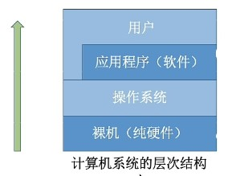
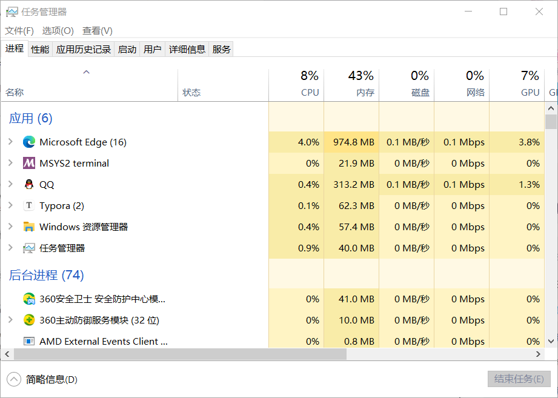
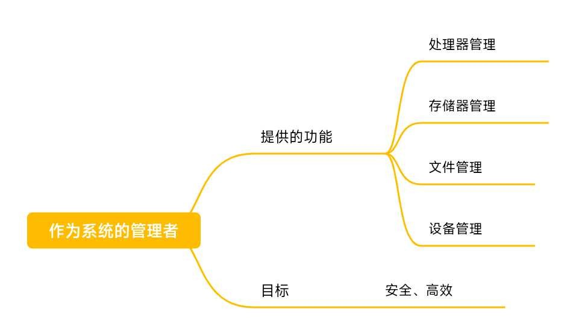
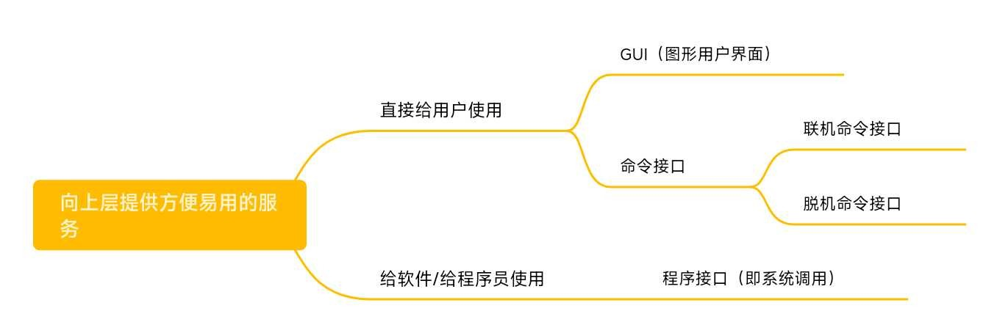

操作系统的概念、功能
对《操作系统》的知识梳理 一
零、计算机系统的结构层次
一、操作系统的概念
操作系统(Operating System,OS)是指控制和管理整个计算机系统的硬件和软件资源，并合理地组织调动计算机的工作和资源的分配；以提供给用户和其他软件方便的接口和环境；它是计算机系统中最基本的系统软件。
例如：Windows操作系统的“任务管理器”
这个界面就可以看到正在运行的进程有哪些，还可以看到它们对CPU、内存等等硬件的使用情况。表现了操作系统对硬件和软件的管理者，同时它还向上层提供了方便易用的服务，是最接近硬件的一层软件。
二、操作系统的功能和目标
1、作为系统资源的管理者
操作系统作为系统资源的管理者，它的功能和目标如下所示：
下面以实现QQ和朋友视频聊天的过程为例：
在各个文件夹中找到QQ安装的位置
双击打开QQ.exe
QQ程序正常运行
开始和朋友视频聊天
第一步，逐层打开文件夹，找到QQ.exe这个程序的存放位置（操作系统的文件管理功能）。
第二步，双击打开QQ.exe的时候，操作系统会帮助我们把这个程序放到内存中（执行一个程序前，需要将该程序放到内存中，才能被CPU处理。操作系统的存储管理）。
第三步，QQ程序正常运行的时候，对应的进程被处理机（CPU）处理（操作系统的处理机管理）。
第四步，在视频聊天的过程中，操作系统把摄像头等设备资源分配给QQ使用（操作系统的设备管理）。
在操作系统的学习中，主要就是学习它作为系统资源的管理者怎样实现这四个功能。
2.向上层提供方便易用的服务
1. GUI：图形化用户接口
用户可以使用形象的图形界面进行操作，而不再需要记忆复杂的命令、参数。例如：在Windows操作系统中，删除一个文件只需要把文件“拖拽”到回收站即可。
2.命令接口
在一些早期的操作系统中，让用户用命令接口的方式进行交互。
1.联机命令接口实例（Windows系统）
联机命令接口 = 交互式命令接口
特点：用户说一句，系统跟着做一句。例如，Windows系统中win+R，输入cmd打开命令解释器，使用time命令。
2. 脱机命令接口实例（Windows系统）
脱机命令接口 = 批处理命令接口
特点：用户说一堆，系统跟着做一堆。例如，运行*.bat文件。
3.程序接口（即系统调用又称广义指令）
可以在程序中进行系统调用来使用程序接口。普通用户不能直接使用程序接口，只能通过程序代码间接使用。如：C语言中“Hello World”程序时，在 printf 函数的底层就使用到了操作系统提供的显式相关的“系统调用”
3.作为最接近硬件的层次
需要实现实现对硬件机器的拓展。
没有任何软件支持的计算机称为裸机。在裸机上安装的操作系统，可以提供资源管理功能和方便用户的服务功能，将裸机改造成功能更强、使用更方便的机器。
通常把覆盖了软件的机器称为扩充机器，又称之为虚拟机。
操作系统对硬件机器的拓展：将CPU、内存、磁盘、显示器、键盘等硬件合理地组织起来，让各种硬件能够相互协调配合，实现更多更复杂的功能